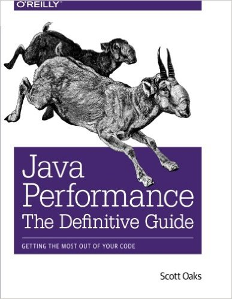
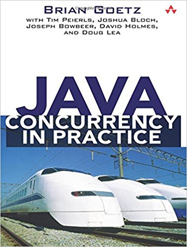
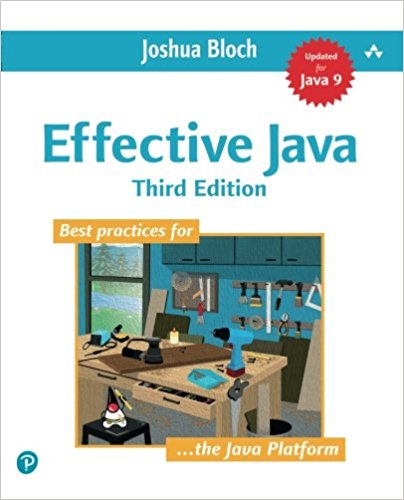

Functional programming
on Java with VAVR
#EYD
Juan Antonio Breña MoralAgenda
- About me
- Concepts
- Functional programming
- Functional features in Java 8+
- VAVR to the rescue
- Patterns
- Performance
- Live demo
- Sharpening the axe
- References
About me
|
|
Chapter Lead (Engineering manager), Triathlete, Deejay & Mindstorms/STEAM teacher. Twitter | Github | Linkedin |
| Madrid | Dubai | London | Brussels | |
| Purpose: "Riding dragons with innovation & fun" | |
|
"Pressure makes diamonds." - George S. Patton Jr. |
|
Concepts
- Programming paradigms
- Eager vs Lazy
- Mutable vs Immutable
Programming paradigms

Eager vs Lazy
Mutable vs Immutable
Functional programming
- First class function
- High-order functions
- Immutable data
- Pure functions
- Recursion
- Mutable vs Immutable
- Manipulation of lists
- Lazy evaluation
Functional programming
- Equational reasoning
- Referential Transparency
- Side effects
- Closures
- Currying
- Monads
Functional features in Java 8+
- Lambdas
- Java Streams
- Collectors
- Optional
- Functional interfaces
- CompletableFuture
VAVR to the rescue
- Philosophy
- Architecture
- Monads
- Functional interfaces
- Immutable collections
- Future/Promises
Architecture

Monads
- Either
- Option
- Try
- Stream
Patterns
- Functional Error Handling
- Functional composition
Performance
Live demo
A live example based on WebMvc.fn to ilustrate some examples.
Sharpening the axe
Give me six hours to chop down a tree and I will spend the first four sharpening the axe.
- Abraham Lincoln
References
Links
Books
|  |
Books
|  |  |